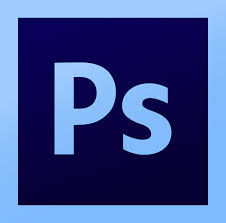
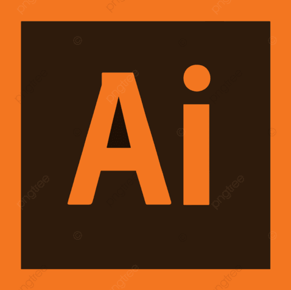

Dans ce travail réalisé durant mon stage chez Bleu Bleu Chocotte, j’ai dû créer une direction artistique pour une soirée VIP. Ce ticket a été conçu comme une invitation fusionnant le luxe moderne avec l’esthétique des tickets traditionnels. Il réinterprète à la fois les anciens tickets et l’imaginaire contemporain associé à cet objet.


La carte de visite avait pour but de mettre en action le logo que j’avais créé ainsi que sa version simplifiée. Ce fut l’une de mes dernières créations et donc je voulais montrer que la direction que j’avais prise pour ce projet était cohérente, harmonieuse et déclinable en plusieurs supports.
L’affiche était une des pièces maîtresse de ce projet. Elle devait retranscrire les informations importantes tout en restant cohérente avec le reste de mes créations. La veille m’a permis de garder cette harmonie tout au long de mon travail. Afin de mettre en valeur le côté epurer du luxe, j’ai choisi un noir mate, avec des dorrure pour illuminer et mettre l’accent sur le premium de cette soirée. J’ai pu mettre en situation les trois créations grâce à des mock-up afin d’avoir une vision de ce que pourraient être les visuels s’ils étaient imprimés.